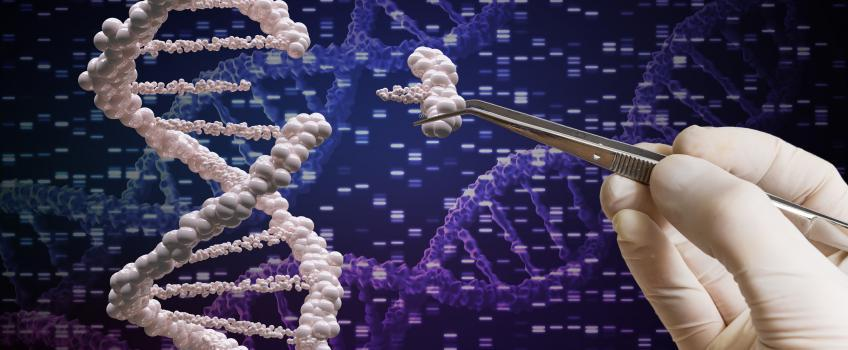

MODERN BIOTECHNOLOGY
A monk named Gregor Mendel identified genes as the unit of inheritance in 1865.
It took another 90 years of research before the structure of DNA was described in 1953.
This discovery was the beginning of modern biotechnology. One of the most is the science of
genetics was transformed by the discovery of DNA. This is the molecule which carries the
hereditary information in the cells. The chemical DNA had already been found in 1869 but
was not taken seriously as the chemical basis of genes until 1950s. Two scientists,
Francis Crick and James Watson, discovered that the DNA structure was a double helix:
two strands twisted around each other like a spiral staircase with bars across like rungs.
The structure, function and composition of DNA is virtually identical in all living organisms
from a blade of grass to an elephant. What differs and makes each creature unique is the
precise ordering of the chemical base in DNA molecule. This gave scientists the idea that
they might change this ordering and so modify life forms. The DNA consists of the
deoxyribose bases (adenine, guanine, cytosine and thymine). The base and collectively form
nucleoside, while base, sugar and phosphate form nucleotide. These are arranged in
particular orientation on DNA called order or sequence and contain information to express
them in form of protein. DNA has double helical structure, with two strands being
complimentary and antiparallel to each other, in which A on one strand base pairs with
T and G base pairs with C with two and three bonds, respectively. DNA is the long but
compact molecule which is nicely packaged in our nucleus. The DNA is capable of making
more copies like itself with the information present in it, as order or sequence of
bases. This is called DNA replication. When the cell divides into two, the DNA also
replicates and divides equally into two. DNA contains whole information for the working
of the cell. The part of the DNA which has information to dictate the biosynthesis of
polypeptide is called “gene”. The arrangement or order of nucleotides determines the
kind of the proteins which we produce. Each gene is responsible for coding a functional
polypeptide. The gene have the information to make a complimentary copy of mRNA.
The information of DNA which makes RNA in turn helps cells to incorporate amino acids
according to arrangement of letters are transcribed into mRNA in the form of triplet
codon , where each codon specifies one particular amino acid. The polypeptide is thus
made by adding respective amino acids according to the instructions present on RNA.
Therefore, the arrangement of four bases (adenine, guanine, cytosine and thymine)
dictates the information to add the 20 amino acids to make all the proteins in all the
living organisms.
